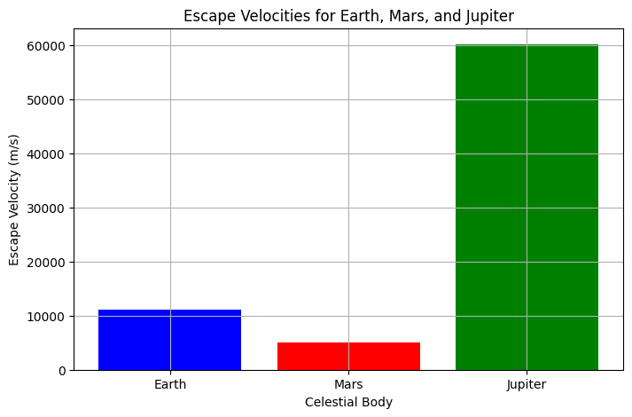
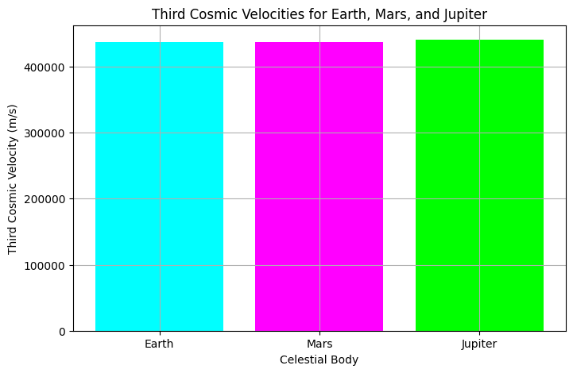
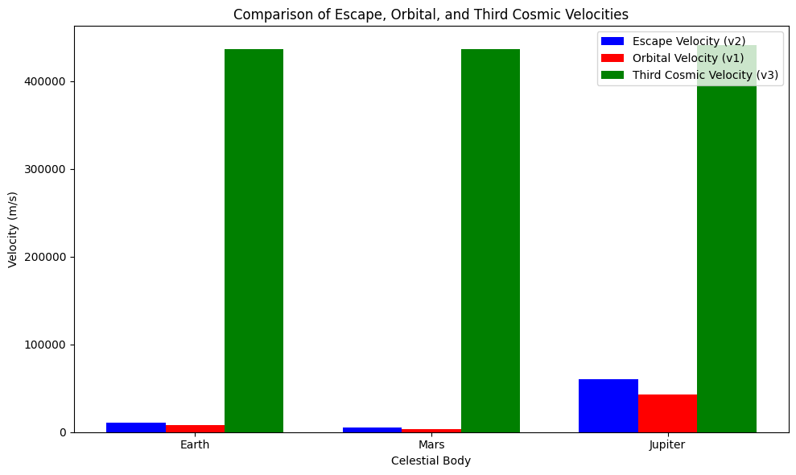

Problem 2
Escape Velocities and Cosmic Velocities
1. Theoretical Foundation
(a) Escape Velocity
The escape velocity is the minimum speed required for an object to escape the gravitational pull of a celestial body (like a planet or star) without further propulsion. It is derived from the concept of energy conservation, where the kinetic energy must equal the gravitational potential energy.
The formula for escape velocity is:
Where: - \( G \) is the gravitational constant, - \( M \) is the mass of the celestial body, - \( R \) is the radius of the celestial body.
Escape Velocity Diagram
To visualize the escape velocity, imagine a rocket launched from the surface of a planet. To escape, it needs to reach a speed equal to or greater than the escape velocity.
Diagram 1: Escape Velocity for Earth, Mars, and Jupiter This plot shows how escape velocity changes for different celestial bodies (Earth, Mars, and Jupiter). 
(b) Orbital (First Cosmic) Velocity
The orbital velocity is the speed at which an object must travel to stay in a stable orbit around a celestial body. It balances the centripetal force required to maintain the orbit and the gravitational pull of the planet.
The formula for the orbital velocity is:
Where: - \( M \) is the mass of the celestial body, - \( R \) is the radius of the orbit (or the distance from the center of the body).
Orbital Velocity Diagram
A satellite in orbit needs to maintain the orbital velocity to stay in a circular orbit.
Diagram 2: Orbital Velocity for Earth, Mars, and Jupiter
This plot compares the orbital velocities for Earth, Mars, and Jupiter.

(c) Solar Escape Velocity (Third Cosmic Velocity)
The third cosmic velocity is the velocity needed for an object to escape the entire solar system. It must overcome not only the gravitational pull of the planet but also the gravitational pull of the Sun.
The formula for the third cosmic velocity is:
Where: - \( v_2 \) is the escape velocity of the planet, - \( v_{\text{orbit}} \) is the orbital velocity of the planet around the Sun.
Solar Escape Velocity Diagram
To visualize the third cosmic velocity, imagine a spacecraft leaving Earth, moving beyond the solar system and needing to break free of both Earth and Sun’s gravity.
Diagram 3: Solar Escape Velocity for Earth This plot compares the escape velocity and the third cosmic velocity for Earth.

2. Visualizing the Velocities
(a) Comparison of Escape, Orbital, and Third Cosmic Velocities
Let's now compare all three velocities (Escape, Orbital, and Third Cosmic) for Earth, Mars, and Jupiter in one consolidated plot.
Diagram 4: Comparison of Escape, Orbital, and Third Cosmic Velocities This bar chart compares the escape, orbital, and third cosmic velocities for three different celestial bodies. 
3. Conclusion
In this exploration, we learned the following:
- Escape Velocity: The minimum speed to escape a planet’s gravity.
- Orbital Velocity: The speed necessary to stay in orbit around a planet.
- Third Cosmic Velocity: The speed required to escape the entire solar system.
These concepts are essential for space exploration, whether launching satellites, sending missions to other planets, or thinking about interstellar travel.